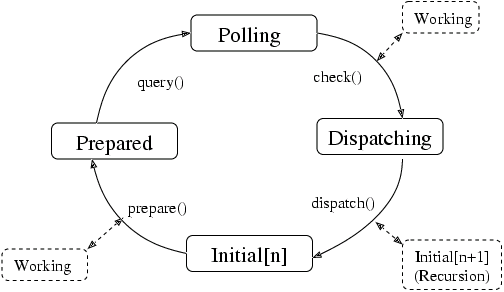

| Top |
| GMainLoop | |
| #define | G_PRIORITY_HIGH |
| #define | G_PRIORITY_DEFAULT |
| #define | G_PRIORITY_HIGH_IDLE |
| #define | G_PRIORITY_DEFAULT_IDLE |
| #define | G_PRIORITY_LOW |
| #define | G_SOURCE_CONTINUE |
| #define | G_SOURCE_REMOVE |
| GMainContext | |
| typedef | GPid |
| #define | G_PID_FORMAT |
| struct | GPollFD |
| #define | G_POLLFD_FORMAT |
| struct | GSource |
| struct | GSourceFuncs |
| struct | GSourceCallbackFuncs |
The main event loop manages all the available sources of events for
GLib and GTK+ applications. These events can come from any number of
different types of sources such as file descriptors (plain files,
pipes or sockets) and timeouts. New types of event sources can also
be added using g_source_attach().
To allow multiple independent sets of sources to be handled in different threads, each source is associated with a GMainContext. A GMainContext can only be running in a single thread, but sources can be added to it and removed from it from other threads.
Each event source is assigned a priority. The default priority, G_PRIORITY_DEFAULT, is 0. Values less than 0 denote higher priorities. Values greater than 0 denote lower priorities. Events from high priority sources are always processed before events from lower priority sources.
Idle functions can also be added, and assigned a priority. These will be run whenever no events with a higher priority are ready to be processed.
The GMainLoop data type represents a main event loop. A GMainLoop is
created with g_main_loop_new(). After adding the initial event sources,
g_main_loop_run() is called. This continuously checks for new events from
each of the event sources and dispatches them. Finally, the processing of
an event from one of the sources leads to a call to g_main_loop_quit() to
exit the main loop, and g_main_loop_run() returns.
It is possible to create new instances of GMainLoop recursively. This is often used in GTK+ applications when showing modal dialog boxes. Note that event sources are associated with a particular GMainContext, and will be checked and dispatched for all main loops associated with that GMainContext.
GTK+ contains wrappers of some of these functions, e.g. gtk_main(),
gtk_main_quit() and gtk_events_pending().
One of the unusual features of the GMainLoop functionality
is that new types of event source can be created and used in
addition to the builtin type of event source. A new event source
type is used for handling GDK events. A new source type is created
by "deriving" from the GSource structure. The derived type of
source is represented by a structure that has the GSource structure
as a first element, and other elements specific to the new source
type. To create an instance of the new source type, call
g_source_new() passing in the size of the derived structure and
a table of functions. These GSourceFuncs determine the behavior of
the new source type.
New source types basically interact with the main context
in two ways. Their prepare function in GSourceFuncs can set a timeout
to determine the maximum amount of time that the main loop will sleep
before checking the source again. In addition, or as well, the source
can add file descriptors to the set that the main context checks using
g_source_add_poll().
Single iterations of a GMainContext can be run with
g_main_context_iteration(). In some cases, more detailed control
of exactly how the details of the main loop work is desired, for
instance, when integrating the GMainLoop with an external main loop.
In such cases, you can call the component functions of
g_main_context_iteration() directly. These functions are
g_main_context_prepare(), g_main_context_query(),
g_main_context_check() and g_main_context_dispatch().
The operation of these functions can best be seen in terms of a state diagram, as shown in this image.

On UNIX, the GLib mainloop is incompatible with fork(). Any program
using the mainloop must either exec() or exit() from the child
without returning to the mainloop.
There are two options for memory management of the user data passed to a
GSource to be passed to its callback on invocation. This data is provided
in calls to g_timeout_add(), g_timeout_add_full(), g_idle_add(), etc. and
more generally, using g_source_set_callback(). This data is typically an
object which ‘owns’ the timeout or idle callback, such as a widget or a
network protocol implementation. In many cases, it is an error for the
callback to be invoked after this owning object has been destroyed, as that
results in use of freed memory.
The first, and preferred, option is to store the source ID returned by
functions such as g_timeout_add() or g_source_attach(), and explicitly
remove that source from the main context using g_source_remove() when the
owning object is finalized. This ensures that the callback can only be
invoked while the object is still alive.
The second option is to hold a strong reference to the object in the
callback, and to release it in the callback’s GDestroyNotify. This ensures
that the object is kept alive until after the source is finalized, which is
guaranteed to be after it is invoked for the final time. The GDestroyNotify
is another callback passed to the ‘full’ variants of GSource functions (for
example, g_timeout_add_full()). It is called when the source is finalized,
and is designed for releasing references like this.
One important caveat of this second approach is that it will keep the object alive indefinitely if the main loop is stopped before the GSource is invoked, which may be undesirable.
GMainLoop * g_main_loop_new (GMainContext *context,gboolean is_running);
Creates a new GMainLoop structure.
context |
a GMainContext (if |
[nullable] |
is_running |
set to |
GMainLoop *
g_main_loop_ref (GMainLoop *loop);
Increases the reference count on a GMainLoop object by one.
void
g_main_loop_unref (GMainLoop *loop);
Decreases the reference count on a GMainLoop object by one. If the result is zero, free the loop and free all associated memory.
void
g_main_loop_run (GMainLoop *loop);
Runs a main loop until g_main_loop_quit() is called on the loop.
If this is called for the thread of the loop's GMainContext,
it will process events from the loop, otherwise it will
simply wait.
void
g_main_loop_quit (GMainLoop *loop);
Stops a GMainLoop from running. Any calls to g_main_loop_run()
for the loop will return.
Note that sources that have already been dispatched when
g_main_loop_quit() is called will still be executed.
gboolean
g_main_loop_is_running (GMainLoop *loop);
Checks to see if the main loop is currently being run via g_main_loop_run().
GMainContext *
g_main_loop_get_context (GMainLoop *loop);
Returns the GMainContext of loop
.
#define g_main_new(is_running)
g_main_new has been deprecated since version 2.2 and should not be used in newly-written code.
Use g_main_loop_new() instead
Creates a new GMainLoop for th default main context.
is_running |
set to |
#define g_main_destroy(loop)
g_main_destroy has been deprecated since version 2.2 and should not be used in newly-written code.
Use g_main_loop_unref() instead
Frees the memory allocated for the GMainLoop.
#define g_main_run(loop)
g_main_run has been deprecated since version 2.2 and should not be used in newly-written code.
Use g_main_loop_run() instead
Runs a main loop until it stops running.
#define g_main_quit(loop)
g_main_quit has been deprecated since version 2.2 and should not be used in newly-written code.
Use g_main_loop_quit() instead
Stops the GMainLoop.
If g_main_run() was called to run the GMainLoop, it will now return.
#define g_main_is_running(loop)
g_main_is_running has been deprecated since version 2.2 and should not be used in newly-written code.
Use g_main_loop_is_running() instead
Checks if the main loop is running.
GMainContext *
g_main_context_new (void);
Creates a new GMainContext structure.
GMainContext *
g_main_context_ref (GMainContext *context);
Increases the reference count on a GMainContext object by one.
void
g_main_context_unref (GMainContext *context);
Decreases the reference count on a GMainContext object by one. If the result is zero, free the context and free all associated memory.
GMainContext *
g_main_context_default (void);
Returns the global default main context. This is the main context
used for main loop functions when a main loop is not explicitly
specified, and corresponds to the "main" main loop. See also
g_main_context_get_thread_default().
gboolean g_main_context_iteration (GMainContext *context,gboolean may_block);
Runs a single iteration for the given main loop. This involves
checking to see if any event sources are ready to be processed,
then if no events sources are ready and may_block
is TRUE, waiting
for a source to become ready, then dispatching the highest priority
events sources that are ready. Otherwise, if may_block
is FALSE
sources are not waited to become ready, only those highest priority
events sources will be dispatched (if any), that are ready at this
given moment without further waiting.
Note that even when may_block
is TRUE, it is still possible for
g_main_context_iteration() to return FALSE, since the wait may
be interrupted for other reasons than an event source becoming ready.
context |
a GMainContext (if |
[nullable] |
may_block |
whether the call may block. |
#define g_main_iteration(may_block)
g_main_iteration has been deprecated since version 2.2 and should not be used in newly-written code.
Use g_main_context_iteration() instead.
Runs a single iteration for the default GMainContext.
gboolean
g_main_context_pending (GMainContext *context);
Checks if any sources have pending events for the given context.
#define g_main_pending()
g_main_pending is deprecated and should not be used in newly-written code.
Checks if any events are pending for the default GMainContext (i.e. ready to be processed).
GSource * g_main_context_find_source_by_id (GMainContext *context,guint source_id);
Finds a GSource given a pair of context and ID.
It is a programmer error to attempt to lookup a non-existent source.
More specifically: source IDs can be reissued after a source has been
destroyed and therefore it is never valid to use this function with a
source ID which may have already been removed. An example is when
scheduling an idle to run in another thread with g_idle_add(): the
idle may already have run and been removed by the time this function
is called on its (now invalid) source ID. This source ID may have
been reissued, leading to the operation being performed against the
wrong source.
context |
a GMainContext (if |
[nullable] |
source_id |
the source ID, as returned by |
GSource * g_main_context_find_source_by_user_data (GMainContext *context,gpointer user_data);
Finds a source with the given user data for the callback. If multiple sources exist with the same user data, the first one found will be returned.
GSource * g_main_context_find_source_by_funcs_user_data (GMainContext *context,GSourceFuncs *funcs,gpointer user_data);
Finds a source with the given source functions and user data. If multiple sources exist with the same source function and user data, the first one found will be returned.
context |
a GMainContext (if |
[nullable] |
funcs |
the |
|
user_data |
the user data from the callback. |
void
g_main_context_wakeup (GMainContext *context);
If context
is currently blocking in g_main_context_iteration()
waiting for a source to become ready, cause it to stop blocking
and return. Otherwise, cause the next invocation of
g_main_context_iteration() to return without blocking.
This API is useful for low-level control over GMainContext; for example, integrating it with main loop implementations such as GMainLoop.
Another related use for this function is when implementing a main loop with a termination condition, computed from multiple threads:
1 2 3 4 5 6 |
#define NUM_TASKS 10 static volatile gint tasks_remaining = NUM_TASKS; ... while (g_atomic_int_get (&tasks_remaining) != 0) g_main_context_iteration (NULL, TRUE); |
Then in a thread:
1 2 3 4 |
perform_work(); if (g_atomic_int_dec_and_test (&tasks_remaining)) g_main_context_wakeup (NULL); |
gboolean
g_main_context_acquire (GMainContext *context);
Tries to become the owner of the specified context.
If some other thread is the owner of the context,
returns FALSE immediately. Ownership is properly
recursive: the owner can require ownership again
and will release ownership when g_main_context_release()
is called as many times as g_main_context_acquire().
You must be the owner of a context before you
can call g_main_context_prepare(), g_main_context_query(),
g_main_context_check(), g_main_context_dispatch().
void
g_main_context_release (GMainContext *context);
Releases ownership of a context previously acquired by this thread
with g_main_context_acquire(). If the context was acquired multiple
times, the ownership will be released only when g_main_context_release()
is called as many times as it was acquired.
gboolean
g_main_context_is_owner (GMainContext *context);
Determines whether this thread holds the (recursive)
ownership of this GMainContext. This is useful to
know before waiting on another thread that may be
blocking to get ownership of context
.
Since: 2.10
gboolean g_main_context_wait (GMainContext *context,GCond *cond,GMutex *mutex);
Tries to become the owner of the specified context,
as with g_main_context_acquire(). But if another thread
is the owner, atomically drop mutex
and wait on cond
until
that owner releases ownership or until cond
is signaled, then
try again (once) to become the owner.
gboolean g_main_context_prepare (GMainContext *context,gint *priority);
Prepares to poll sources within a main loop. The resulting information
for polling is determined by calling g_main_context_query().
You must have successfully acquired the context with
g_main_context_acquire() before you may call this function.
gint g_main_context_query (GMainContext *context,gint max_priority,gint *timeout_,GPollFD *fds,gint n_fds);
Determines information necessary to poll this main loop.
You must have successfully acquired the context with
g_main_context_acquire() before you may call this function.
context |
||
max_priority |
maximum priority source to check |
|
timeout_ |
location to store timeout to be used in polling. |
[out] |
fds |
location to store GPollFD records that need to be polled. |
[out caller-allocates][array length=n_fds] |
n_fds |
length of |
[in] |
gboolean g_main_context_check (GMainContext *context,gint max_priority,GPollFD *fds,gint n_fds);
Passes the results of polling back to the main loop.
You must have successfully acquired the context with
g_main_context_acquire() before you may call this function.
context |
||
max_priority |
the maximum numerical priority of sources to check |
|
fds |
array of GPollFD's that was passed to
the last call to |
[array length=n_fds] |
n_fds |
return value of |
void
g_main_context_dispatch (GMainContext *context);
Dispatches all pending sources.
You must have successfully acquired the context with
g_main_context_acquire() before you may call this function.
void g_main_context_set_poll_func (GMainContext *context,GPollFunc func);
Sets the function to use to handle polling of file descriptors. It
will be used instead of the poll() system call
(or GLib's replacement function, which is used where
poll() isn't available).
This function could possibly be used to integrate the GLib event loop with an external event loop.
GPollFunc
g_main_context_get_poll_func (GMainContext *context);
Gets the poll function set by g_main_context_set_poll_func().
gint (*GPollFunc) (GPollFD *ufds,guint nfsd,gint timeout_);
Specifies the type of function passed to g_main_context_set_poll_func().
The semantics of the function should match those of the poll() system call.
ufds |
an array of GPollFD elements |
|
nfsd |
the number of elements in |
|
timeout_ |
the maximum time to wait for an event of the file descriptors. A negative value indicates an infinite timeout. |
the number of GPollFD elements which have events or errors reported, or -1 if an error occurred.
void g_main_context_add_poll (GMainContext *context,GPollFD *fd,gint priority);
Adds a file descriptor to the set of file descriptors polled for
this context. This will very seldom be used directly. Instead
a typical event source will use g_source_add_unix_fd() instead.
context |
a GMainContext (or |
[nullable] |
fd |
a GPollFD structure holding information about a file descriptor to watch. |
|
priority |
the priority for this file descriptor which should be
the same as the priority used for |
void g_main_context_remove_poll (GMainContext *context,GPollFD *fd);
Removes file descriptor from the set of file descriptors to be polled for a particular context.
gint
g_main_depth (void);
Returns the depth of the stack of calls to
g_main_context_dispatch() on any GMainContext in the current thread.
That is, when called from the toplevel, it gives 0. When
called from within a callback from g_main_context_iteration()
(or g_main_loop_run(), etc.) it returns 1. When called from within
a callback to a recursive call to g_main_context_iteration(),
it returns 2. And so forth.
This function is useful in a situation like the following: Imagine an extremely simple "garbage collected" system.
1 2 3 4 5 6 7 8 9 10 11 12 13 14 15 16 17 18 19 20 21 22 23 24 25 26 27 |
static GList *free_list; gpointer allocate_memory (gsize size) { gpointer result = g_malloc (size); free_list = g_list_prepend (free_list, result); return result; } void free_allocated_memory (void) { GList *l; for (l = free_list; l; l = l->next); g_free (l->data); g_list_free (free_list); free_list = NULL; } [...] while (TRUE); { g_main_context_iteration (NULL, TRUE); free_allocated_memory(); } |
This works from an application, however, if you want to do the same
thing from a library, it gets more difficult, since you no longer
control the main loop. You might think you can simply use an idle
function to make the call to free_allocated_memory(), but that
doesn't work, since the idle function could be called from a
recursive callback. This can be fixed by using g_main_depth()
1 2 3 4 5 6 7 8 9 10 11 12 13 14 15 16 17 18 19 20 21 22 23 24 25 26 27 28 29 30 |
gpointer allocate_memory (gsize size) { FreeListBlock *block = g_new (FreeListBlock, 1); block->mem = g_malloc (size); block->depth = g_main_depth (); free_list = g_list_prepend (free_list, block); return block->mem; } void free_allocated_memory (void) { GList *l; int depth = g_main_depth (); for (l = free_list; l; ); { GList *next = l->next; FreeListBlock *block = l->data; if (block->depth > depth) { g_free (block->mem); g_free (block); free_list = g_list_delete_link (free_list, l); } l = next; } } |
There is a temptation to use g_main_depth() to solve
problems with reentrancy. For instance, while waiting for data
to be received from the network in response to a menu item,
the menu item might be selected again. It might seem that
one could make the menu item's callback return immediately
and do nothing if g_main_depth() returns a value greater than 1.
However, this should be avoided since the user then sees selecting
the menu item do nothing. Furthermore, you'll find yourself adding
these checks all over your code, since there are doubtless many,
many things that the user could do. Instead, you can use the
following techniques:
Use gtk_widget_set_sensitive() or modal dialogs to prevent
the user from interacting with elements while the main
loop is recursing.
Avoid main loop recursion in situations where you can't handle arbitrary callbacks. Instead, structure your code so that you simply return to the main loop and then get called again when there is more work to do.
GSource *
g_main_current_source (void);
Returns the currently firing source for this thread.
Since: 2.12
#define g_main_set_poll_func(func)
g_main_set_poll_func has been deprecated since version 2.2 and should not be used in newly-written code.
Use g_main_context_set_poll_func() again
Sets the function to use for the handle polling of file descriptors for the default main context.
void g_main_context_invoke (GMainContext *context,GSourceFunc function,gpointer data);
Invokes a function in such a way that context
is owned during the
invocation of function
.
If context
is NULL then the global default main context — as
returned by g_main_context_default() — is used.
If context
is owned by the current thread, function
is called
directly. Otherwise, if context
is the thread-default main context
of the current thread and g_main_context_acquire() succeeds, then
function
is called and g_main_context_release() is called
afterwards.
In any other case, an idle source is created to call function
and
that source is attached to context
(presumably to be run in another
thread). The idle source is attached with G_PRIORITY_DEFAULT
priority. If you want a different priority, use
g_main_context_invoke_full().
Note that, as with normal idle functions, function
should probably
return FALSE. If it returns TRUE, it will be continuously run in a
loop (and may prevent this call from returning).
context |
a GMainContext, or |
[nullable] |
function |
function to call |
|
data |
data to pass to |
Since: 2.28
void g_main_context_invoke_full (GMainContext *context,gint priority,GSourceFunc function,gpointer data,GDestroyNotify notify);
Invokes a function in such a way that context
is owned during the
invocation of function
.
This function is the same as g_main_context_invoke() except that it
lets you specify the priority in case function
ends up being
scheduled as an idle and also lets you give a GDestroyNotify for data
.
notify
should not assume that it is called from any particular
thread or with any particular context acquired.
context |
a GMainContext, or |
[nullable] |
priority |
the priority at which to run |
|
function |
function to call |
|
data |
data to pass to |
|
notify |
a function to call when |
[nullable] |
Since: 2.28
GMainContext *
g_main_context_get_thread_default (void);
Gets the thread-default GMainContext for this thread. Asynchronous
operations that want to be able to be run in contexts other than
the default one should call this method or
g_main_context_ref_thread_default() to get a GMainContext to add
their GSources to. (Note that even in single-threaded
programs applications may sometimes want to temporarily push a
non-default context, so it is not safe to assume that this will
always return NULL if you are running in the default thread.)
If you need to hold a reference on the context, use
g_main_context_ref_thread_default() instead.
the thread-default GMainContext, or
NULL if the thread-default context is the global default context.
[transfer none]
Since: 2.22
GMainContext *
g_main_context_ref_thread_default (void);
Gets the thread-default GMainContext for this thread, as with
g_main_context_get_thread_default(), but also adds a reference to
it with g_main_context_ref(). In addition, unlike
g_main_context_get_thread_default(), if the thread-default context
is the global default context, this will return that GMainContext
(with a ref added to it) rather than returning NULL.
the thread-default GMainContext. Unref
with g_main_context_unref() when you are done with it.
[transfer full]
Since: 2.32
void
g_main_context_push_thread_default (GMainContext *context);
Acquires context
and sets it as the thread-default context for the
current thread. This will cause certain asynchronous operations
(such as most gio-based I/O) which are
started in this thread to run under context
and deliver their
results to its main loop, rather than running under the global
default context in the main thread. Note that calling this function
changes the context returned by g_main_context_get_thread_default(),
not the one returned by g_main_context_default(), so it does not affect
the context used by functions like g_idle_add().
Normally you would call this function shortly after creating a new
thread, passing it a GMainContext which will be run by a
GMainLoop in that thread, to set a new default context for all
async operations in that thread. In this case you may not need to
ever call g_main_context_pop_thread_default(), assuming you want the
new GMainContext to be the default for the whole lifecycle of the
thread.
If you don't have control over how the new thread was created (e.g.
in the new thread isn't newly created, or if the thread life
cycle is managed by a GThreadPool), it is always suggested to wrap
the logic that needs to use the new GMainContext inside a
g_main_context_push_thread_default() / g_main_context_pop_thread_default()
pair, otherwise threads that are re-used will end up never explicitly
releasing the GMainContext reference they hold.
In some cases you may want to schedule a single operation in a
non-default context, or temporarily use a non-default context in
the main thread. In that case, you can wrap the call to the
asynchronous operation inside a
g_main_context_push_thread_default() /
g_main_context_pop_thread_default() pair, but it is up to you to
ensure that no other asynchronous operations accidentally get
started while the non-default context is active.
Beware that libraries that predate this function may not correctly
handle being used from a thread with a thread-default context. Eg,
see g_file_supports_thread_contexts().
Since: 2.22
void
g_main_context_pop_thread_default (GMainContext *context);
Pops context
off the thread-default context stack (verifying that
it was on the top of the stack).
Since: 2.22
GSource *
g_timeout_source_new (guint interval);
Creates a new timeout source.
The source will not initially be associated with any GMainContext
and must be added to one with g_source_attach() before it will be
executed.
The interval given is in terms of monotonic time, not wall clock
time. See g_get_monotonic_time().
GSource *
g_timeout_source_new_seconds (guint interval);
Creates a new timeout source.
The source will not initially be associated with any GMainContext
and must be added to one with g_source_attach() before it will be
executed.
The scheduling granularity/accuracy of this timeout source will be in seconds.
The interval given in terms of monotonic time, not wall clock time.
See g_get_monotonic_time().
Since: 2.14
guint g_timeout_add (guint interval,GSourceFunc function,gpointer data);
Sets a function to be called at regular intervals, with the default
priority, G_PRIORITY_DEFAULT. The function is called repeatedly
until it returns FALSE, at which point the timeout is automatically
destroyed and the function will not be called again. The first call
to the function will be at the end of the first interval
.
Note that timeout functions may be delayed, due to the processing of other event sources. Thus they should not be relied on for precise timing. After each call to the timeout function, the time of the next timeout is recalculated based on the current time and the given interval (it does not try to 'catch up' time lost in delays).
See memory management of sources for details
on how to handle the return value and memory management of data
.
If you want to have a timer in the "seconds" range and do not care
about the exact time of the first call of the timer, use the
g_timeout_add_seconds() function; this function allows for more
optimizations and more efficient system power usage.
This internally creates a main loop source using g_timeout_source_new()
and attaches it to the global GMainContext using g_source_attach(), so
the callback will be invoked in whichever thread is running that main
context. You can do these steps manually if you need greater control or to
use a custom main context.
The interval given is in terms of monotonic time, not wall clock
time. See g_get_monotonic_time().
guint g_timeout_add_full (gint priority,guint interval,GSourceFunc function,gpointer data,GDestroyNotify notify);
Sets a function to be called at regular intervals, with the given
priority. The function is called repeatedly until it returns
FALSE, at which point the timeout is automatically destroyed and
the function will not be called again. The notify
function is
called when the timeout is destroyed. The first call to the
function will be at the end of the first interval
.
Note that timeout functions may be delayed, due to the processing of other event sources. Thus they should not be relied on for precise timing. After each call to the timeout function, the time of the next timeout is recalculated based on the current time and the given interval (it does not try to 'catch up' time lost in delays).
See memory management of sources for details
on how to handle the return value and memory management of data
.
This internally creates a main loop source using g_timeout_source_new()
and attaches it to the global GMainContext using g_source_attach(), so
the callback will be invoked in whichever thread is running that main
context. You can do these steps manually if you need greater control or to
use a custom main context.
The interval given in terms of monotonic time, not wall clock time.
See g_get_monotonic_time().
[rename-to g_timeout_add]
priority |
the priority of the timeout source. Typically this will be in the range between G_PRIORITY_DEFAULT and G_PRIORITY_HIGH. |
|
interval |
the time between calls to the function, in milliseconds (1/1000ths of a second) |
|
function |
function to call |
|
data |
data to pass to |
|
notify |
function to call when the timeout is removed, or |
[nullable] |
guint g_timeout_add_seconds (guint interval,GSourceFunc function,gpointer data);
Sets a function to be called at regular intervals with the default
priority, G_PRIORITY_DEFAULT. The function is called repeatedly until
it returns FALSE, at which point the timeout is automatically destroyed
and the function will not be called again.
This internally creates a main loop source using
g_timeout_source_new_seconds() and attaches it to the main loop context
using g_source_attach(). You can do these steps manually if you need
greater control. Also see g_timeout_add_seconds_full().
Note that the first call of the timer may not be precise for timeouts
of one second. If you need finer precision and have such a timeout,
you may want to use g_timeout_add() instead.
See memory management of sources for details
on how to handle the return value and memory management of data
.
The interval given is in terms of monotonic time, not wall clock
time. See g_get_monotonic_time().
interval |
the time between calls to the function, in seconds |
|
function |
function to call |
|
data |
data to pass to |
Since: 2.14
guint g_timeout_add_seconds_full (gint priority,guint interval,GSourceFunc function,gpointer data,GDestroyNotify notify);
Sets a function to be called at regular intervals, with priority
.
The function is called repeatedly until it returns FALSE, at which
point the timeout is automatically destroyed and the function will
not be called again.
Unlike g_timeout_add(), this function operates at whole second granularity.
The initial starting point of the timer is determined by the implementation
and the implementation is expected to group multiple timers together so that
they fire all at the same time.
To allow this grouping, the interval
to the first timer is rounded
and can deviate up to one second from the specified interval.
Subsequent timer iterations will generally run at the specified interval.
Note that timeout functions may be delayed, due to the processing of other
event sources. Thus they should not be relied on for precise timing.
After each call to the timeout function, the time of the next
timeout is recalculated based on the current time and the given interval
See memory management of sources for details
on how to handle the return value and memory management of data
.
If you want timing more precise than whole seconds, use g_timeout_add()
instead.
The grouping of timers to fire at the same time results in a more power
and CPU efficient behavior so if your timer is in multiples of seconds
and you don't require the first timer exactly one second from now, the
use of g_timeout_add_seconds() is preferred over g_timeout_add().
This internally creates a main loop source using
g_timeout_source_new_seconds() and attaches it to the main loop context
using g_source_attach(). You can do these steps manually if you need
greater control.
The interval given is in terms of monotonic time, not wall clock
time. See g_get_monotonic_time().
[rename-to g_timeout_add_seconds]
priority |
the priority of the timeout source. Typically this will be in the range between G_PRIORITY_DEFAULT and G_PRIORITY_HIGH. |
|
interval |
the time between calls to the function, in seconds |
|
function |
function to call |
|
data |
data to pass to |
|
notify |
function to call when the timeout is removed, or |
[nullable] |
Since: 2.14
GSource *
g_idle_source_new (void);
Creates a new idle source.
The source will not initially be associated with any GMainContext
and must be added to one with g_source_attach() before it will be
executed. Note that the default priority for idle sources is
G_PRIORITY_DEFAULT_IDLE, as compared to other sources which
have a default priority of G_PRIORITY_DEFAULT.
guint g_idle_add (GSourceFunc function,gpointer data);
Adds a function to be called whenever there are no higher priority
events pending to the default main loop. The function is given the
default idle priority, G_PRIORITY_DEFAULT_IDLE. If the function
returns FALSE it is automatically removed from the list of event
sources and will not be called again.
See memory management of sources for details
on how to handle the return value and memory management of data
.
This internally creates a main loop source using g_idle_source_new()
and attaches it to the global GMainContext using g_source_attach(), so
the callback will be invoked in whichever thread is running that main
context. You can do these steps manually if you need greater control or to
use a custom main context.
guint g_idle_add_full (gint priority,GSourceFunc function,gpointer data,GDestroyNotify notify);
Adds a function to be called whenever there are no higher priority
events pending. If the function returns FALSE it is automatically
removed from the list of event sources and will not be called again.
See memory management of sources for details
on how to handle the return value and memory management of data
.
This internally creates a main loop source using g_idle_source_new()
and attaches it to the global GMainContext using g_source_attach(), so
the callback will be invoked in whichever thread is running that main
context. You can do these steps manually if you need greater control or to
use a custom main context.
[rename-to g_idle_add]
priority |
the priority of the idle source. Typically this will be in the range between G_PRIORITY_DEFAULT_IDLE and G_PRIORITY_HIGH_IDLE. |
|
function |
function to call |
|
data |
data to pass to |
|
notify |
function to call when the idle is removed, or |
[nullable] |
gboolean
g_idle_remove_by_data (gpointer data);
Removes the idle function with the given data.
void (*GChildWatchFunc) (GPid pid,gint status,gpointer user_data);
Prototype of a GChildWatchSource callback, called when a child
process has exited. To interpret status
, see the documentation
for g_spawn_check_exit_status().
pid |
the process id of the child process |
|
status |
Status information about the child process, encoded in a platform-specific manner |
|
user_data |
user data passed to |
GSource *
g_child_watch_source_new (GPid pid);
Creates a new child_watch source.
The source will not initially be associated with any GMainContext
and must be added to one with g_source_attach() before it will be
executed.
Note that child watch sources can only be used in conjunction with
g_spawn... when the G_SPAWN_DO_NOT_REAP_CHILD flag is used.
Note that on platforms where GPid must be explicitly closed
(see g_spawn_close_pid()) pid
must not be closed while the
source is still active. Typically, you will want to call
g_spawn_close_pid() in the callback function for the source.
On POSIX platforms, the following restrictions apply to this API due to limitations in POSIX process interfaces:
pid
must be a child of this process
pid
must be positive
the application must not call waitpid with a non-positive
first argument, for instance in another thread
the application must not wait for pid
to exit by any other
mechanism, including waitpid(pid, ...) or a second child-watch
source for the same pid
the application must not ignore SIGCHILD
If any of those conditions are not met, this and related APIs will
not work correctly. This can often be diagnosed via a GLib warning
stating that ECHILD was received by waitpid.
Calling waitpid for specific processes other than pid
remains a
valid thing to do.
pid |
process to watch. On POSIX the positive pid of a child process. On Windows a handle for a process (which doesn't have to be a child). |
Since: 2.4
guint g_child_watch_add (GPid pid,GChildWatchFunc function,gpointer data);
Sets a function to be called when the child indicated by pid
exits, at a default priority, G_PRIORITY_DEFAULT.
If you obtain pid
from g_spawn_async() or g_spawn_async_with_pipes()
you will need to pass G_SPAWN_DO_NOT_REAP_CHILD as flag to
the spawn function for the child watching to work.
Note that on platforms where GPid must be explicitly closed
(see g_spawn_close_pid()) pid
must not be closed while the
source is still active. Typically, you will want to call
g_spawn_close_pid() in the callback function for the source.
GLib supports only a single callback per process id.
On POSIX platforms, the same restrictions mentioned for
g_child_watch_source_new() apply to this function.
This internally creates a main loop source using
g_child_watch_source_new() and attaches it to the main loop context
using g_source_attach(). You can do these steps manually if you
need greater control.
pid |
process id to watch. On POSIX the positive pid of a child process. On Windows a handle for a process (which doesn't have to be a child). |
|
function |
function to call |
|
data |
data to pass to |
Since: 2.4
guint g_child_watch_add_full (gint priority,GPid pid,GChildWatchFunc function,gpointer data,GDestroyNotify notify);
Sets a function to be called when the child indicated by pid
exits, at the priority priority
.
If you obtain pid
from g_spawn_async() or g_spawn_async_with_pipes()
you will need to pass G_SPAWN_DO_NOT_REAP_CHILD as flag to
the spawn function for the child watching to work.
In many programs, you will want to call g_spawn_check_exit_status()
in the callback to determine whether or not the child exited
successfully.
Also, note that on platforms where GPid must be explicitly closed
(see g_spawn_close_pid()) pid
must not be closed while the source
is still active. Typically, you should invoke g_spawn_close_pid()
in the callback function for the source.
GLib supports only a single callback per process id.
On POSIX platforms, the same restrictions mentioned for
g_child_watch_source_new() apply to this function.
This internally creates a main loop source using
g_child_watch_source_new() and attaches it to the main loop context
using g_source_attach(). You can do these steps manually if you
need greater control.
[rename-to g_child_watch_add]
priority |
the priority of the idle source. Typically this will be in the range between G_PRIORITY_DEFAULT_IDLE and G_PRIORITY_HIGH_IDLE. |
|
pid |
process to watch. On POSIX the positive pid of a child process. On Windows a handle for a process (which doesn't have to be a child). |
|
function |
function to call |
|
data |
data to pass to |
|
notify |
function to call when the idle is removed, or |
[nullable] |
Since: 2.4
gint g_poll (GPollFD *fds,guint nfds,gint timeout);
Polls fds
, as with the poll() system call, but portably. (On
systems that don't have poll(), it is emulated using select().)
This is used internally by GMainContext, but it can be called
directly if you need to block until a file descriptor is ready, but
don't want to run the full main loop.
Each element of fds
is a GPollFD describing a single file
descriptor to poll. The fd
field indicates the file descriptor,
and the events
field indicates the events to poll for. On return,
the revents
fields will be filled with the events that actually
occurred.
On POSIX systems, the file descriptors in fds
can be any sort of
file descriptor, but the situation is much more complicated on
Windows. If you need to use g_poll() in code that has to run on
Windows, the easiest solution is to construct all of your
GPollFDs with g_io_channel_win32_make_pollfd().
fds |
file descriptors to poll |
|
nfds |
the number of file descriptors in |
|
timeout |
amount of time to wait, in milliseconds, or -1 to wait forever |
the number of entries in fds
whose revents
fields
were filled in, or 0 if the operation timed out, or -1 on error or
if the call was interrupted.
Since: 2.20
void
(*GSourceDummyMarshal) (void);
This is just a placeholder for GClosureMarshal, which cannot be used here for dependency reasons.
GSource * g_source_new (GSourceFuncs *source_funcs,guint struct_size);
Creates a new GSource structure. The size is specified to
allow creating structures derived from GSource that contain
additional data. The size passed in must be at least
sizeof (GSource).
The source will not initially be associated with any GMainContext
and must be added to one with g_source_attach() before it will be
executed.
source_funcs |
structure containing functions that implement the sources behavior. |
|
struct_size |
size of the GSource structure to create. |
GSource *
g_source_ref (GSource *source);
Increases the reference count on a source by one.
void
g_source_unref (GSource *source);
Decreases the reference count of a source by one. If the resulting reference count is zero the source and associated memory will be destroyed.
void g_source_set_funcs (GSource *source,GSourceFuncs *funcs);
Sets the source functions (can be used to override default implementations) of an unattached source.
Since: 2.12
guint g_source_attach (GSource *source,GMainContext *context);
Adds a GSource to a context
so that it will be executed within
that context. Remove it by calling g_source_destroy().
source |
a GSource |
|
context |
a GMainContext (if |
[nullable] |
void
g_source_destroy (GSource *source);
Removes a source from its GMainContext, if any, and mark it as destroyed. The source cannot be subsequently added to another context. It is safe to call this on sources which have already been removed from their context.
gboolean
g_source_is_destroyed (GSource *source);
Returns whether source
has been destroyed.
This is important when you operate upon your objects from within idle handlers, but may have freed the object before the dispatch of your idle handler.
1 2 3 4 5 6 7 8 9 10 11 12 13 14 15 16 17 18 19 20 21 22 23 24 25 26 27 28 29 |
static gboolean idle_callback (gpointer data) { SomeWidget *self = data; GDK_THREADS_ENTER (); // do stuff with self self->idle_id = 0; GDK_THREADS_LEAVE (); return G_SOURCE_REMOVE; } static void some_widget_do_stuff_later (SomeWidget *self) { self->idle_id = g_idle_add (idle_callback, self); } static void some_widget_finalize (GObject *object) { SomeWidget *self = SOME_WIDGET (object); if (self->idle_id) g_source_remove (self->idle_id); G_OBJECT_CLASS (parent_class)->finalize (object); } |
This will fail in a multi-threaded application if the widget is destroyed before the idle handler fires due to the use after free in the callback. A solution, to this particular problem, is to check to if the source has already been destroy within the callback.
1 2 3 4 5 6 7 8 9 10 11 12 13 14 |
static gboolean idle_callback (gpointer data) { SomeWidget *self = data; GDK_THREADS_ENTER (); if (!g_source_is_destroyed (g_main_current_source ())) { // do stuff with self } GDK_THREADS_LEAVE (); return FALSE; } |
Calls to this function from a thread other than the one acquired by the GMainContext the GSource is attached to are typically redundant, as the source could be destroyed immediately after this function returns. However, once a source is destroyed it cannot be un-destroyed, so this function can be used for opportunistic checks from any thread.
Since: 2.12
void g_source_set_priority (GSource *source,gint priority);
Sets the priority of a source. While the main loop is being run, a source will be dispatched if it is ready to be dispatched and no sources at a higher (numerically smaller) priority are ready to be dispatched.
A child source always has the same priority as its parent. It is not permitted to change the priority of a source once it has been added as a child of another source.
gint
g_source_get_priority (GSource *source);
Gets the priority of a source.
void g_source_set_can_recurse (GSource *source,gboolean can_recurse);
Sets whether a source can be called recursively. If can_recurse
is
TRUE, then while the source is being dispatched then this source
will be processed normally. Otherwise, all processing of this
source is blocked until the dispatch function returns.
gboolean
g_source_get_can_recurse (GSource *source);
Checks whether a source is allowed to be called recursively.
see g_source_set_can_recurse().
guint
g_source_get_id (GSource *source);
Returns the numeric ID for a particular source. The ID of a source
is a positive integer which is unique within a particular main loop
context. The reverse
mapping from ID to source is done by g_main_context_find_source_by_id().
const char *
g_source_get_name (GSource *source);
Gets a name for the source, used in debugging and profiling. The
name may be NULL if it has never been set with g_source_set_name().
Since: 2.26
void g_source_set_name (GSource *source,const char *name);
Sets a name for the source, used in debugging and profiling. The name defaults to NULL.
The source name should describe in a human-readable way what the source does. For example, "X11 event queue" or "GTK+ repaint idle handler" or whatever it is.
It is permitted to call this function multiple times, but is not recommended due to the potential performance impact. For example, one could change the name in the "check" function of a GSourceFuncs to include details like the event type in the source name.
Use caution if changing the name while another thread may be
accessing it with g_source_get_name(); that function does not copy
the value, and changing the value will free it while the other thread
may be attempting to use it.
Since: 2.26
void g_source_set_name_by_id (guint tag,const char *name);
Sets the name of a source using its ID.
This is a convenience utility to set source names from the return
value of g_idle_add(), g_timeout_add(), etc.
It is a programmer error to attempt to set the name of a non-existent source.
More specifically: source IDs can be reissued after a source has been
destroyed and therefore it is never valid to use this function with a
source ID which may have already been removed. An example is when
scheduling an idle to run in another thread with g_idle_add(): the
idle may already have run and been removed by the time this function
is called on its (now invalid) source ID. This source ID may have
been reissued, leading to the operation being performed against the
wrong source.
Since: 2.26
GMainContext *
g_source_get_context (GSource *source);
Gets the GMainContext with which the source is associated.
You can call this on a source that has been destroyed, provided
that the GMainContext it was attached to still exists (in which
case it will return that GMainContext). In particular, you can
always call this function on the source returned from
g_main_current_source(). But calling this function on a source
whose GMainContext has been destroyed is an error.
the GMainContext with which the
source is associated, or NULL if the context has not
yet been added to a source.
[transfer none][nullable]
void g_source_set_callback (GSource *source,GSourceFunc func,gpointer data,GDestroyNotify notify);
Sets the callback function for a source. The callback for a source is called from the source's dispatch function.
The exact type of func
depends on the type of source; ie. you
should not count on func
being called with data
as its first
parameter.
See memory management of sources for details
on how to handle memory management of data
.
Typically, you won't use this function. Instead use functions specific to the type of source you are using.
source |
the source |
|
func |
a callback function |
|
data |
the data to pass to callback function |
|
notify |
a function to call when |
[nullable] |
gboolean
(*GSourceFunc) (gpointer user_data);
Specifies the type of function passed to g_timeout_add(),
g_timeout_add_full(), g_idle_add(), and g_idle_add_full().
user_data |
data passed to the function, set when the source was created with one of the above functions |
FALSE if the source should be removed. G_SOURCE_CONTINUE and
G_SOURCE_REMOVE are more memorable names for the return value.
void g_source_set_callback_indirect (GSource *source,gpointer callback_data,GSourceCallbackFuncs *callback_funcs);
Sets the callback function storing the data as a refcounted callback
"object". This is used internally. Note that calling
g_source_set_callback_indirect() assumes
an initial reference count on callback_data
, and thus
callback_funcs->unref
will eventually be called once more
than callback_funcs->ref
.
void g_source_set_ready_time (GSource *source,gint64 ready_time);
Sets a GSource to be dispatched when the given monotonic time is
reached (or passed). If the monotonic time is in the past (as it
always will be if ready_time
is 0) then the source will be
dispatched immediately.
If ready_time
is -1 then the source is never woken up on the basis
of the passage of time.
Dispatching the source does not reset the ready time. You should do so yourself, from the source dispatch function.
Note that if you have a pair of sources where the ready time of one suggests that it will be delivered first but the priority for the other suggests that it would be delivered first, and the ready time for both sources is reached during the same main context iteration, then the order of dispatch is undefined.
It is a no-op to call this function on a GSource which has already been
destroyed with g_source_destroy().
This API is only intended to be used by implementations of GSource. Do not call this API on a GSource that you did not create.
source |
a GSource |
|
ready_time |
the monotonic time at which the source will be ready, 0 for "immediately", -1 for "never" |
Since: 2.36
gint64
g_source_get_ready_time (GSource *source);
Gets the "ready time" of source
, as set by
g_source_set_ready_time().
Any time before the current monotonic time (including 0) is an indication that the source will fire immediately.
gpointer g_source_add_unix_fd (GSource *source,gint fd,GIOCondition events);
Monitors fd
for the IO events in events
.
The tag returned by this function can be used to remove or modify the
monitoring of the fd using g_source_remove_unix_fd() or
g_source_modify_unix_fd().
It is not necessary to remove the fd before destroying the source; it will be cleaned up automatically.
This API is only intended to be used by implementations of GSource. Do not call this API on a GSource that you did not create.
As the name suggests, this function is not available on Windows.
Since: 2.36
void g_source_remove_unix_fd (GSource *source,gpointer tag);
Reverses the effect of a previous call to g_source_add_unix_fd().
You only need to call this if you want to remove an fd from being watched while keeping the same source around. In the normal case you will just want to destroy the source.
This API is only intended to be used by implementations of GSource. Do not call this API on a GSource that you did not create.
As the name suggests, this function is not available on Windows.
Since: 2.36
void g_source_modify_unix_fd (GSource *source,gpointer tag,GIOCondition new_events);
Updates the event mask to watch for the fd identified by tag
.
tag
is the tag returned from g_source_add_unix_fd().
If you want to remove a fd, don't set its event mask to zero.
Instead, call g_source_remove_unix_fd().
This API is only intended to be used by implementations of GSource. Do not call this API on a GSource that you did not create.
As the name suggests, this function is not available on Windows.
source |
a GSource |
|
tag |
the tag from |
[not nullable] |
new_events |
the new event mask to watch |
Since: 2.36
GIOCondition g_source_query_unix_fd (GSource *source,gpointer tag);
Queries the events reported for the fd corresponding to tag
on
source
during the last poll.
The return value of this function is only defined when the function
is called from the check or dispatch functions for source
.
This API is only intended to be used by implementations of GSource. Do not call this API on a GSource that you did not create.
As the name suggests, this function is not available on Windows.
Since: 2.36
void g_source_add_poll (GSource *source,GPollFD *fd);
Adds a file descriptor to the set of file descriptors polled for
this source. This is usually combined with g_source_new() to add an
event source. The event source's check function will typically test
the revents
field in the GPollFD struct and return TRUE if events need
to be processed.
This API is only intended to be used by implementations of GSource. Do not call this API on a GSource that you did not create.
Using this API forces the linear scanning of event sources on each
main loop iteration. Newly-written event sources should try to use
g_source_add_unix_fd() instead of this API.
void g_source_remove_poll (GSource *source,GPollFD *fd);
Removes a file descriptor from the set of file descriptors polled for this source.
This API is only intended to be used by implementations of GSource. Do not call this API on a GSource that you did not create.
void g_source_add_child_source (GSource *source,GSource *child_source);
Adds child_source
to source
as a "polled" source; when source
is
added to a GMainContext, child_source
will be automatically added
with the same priority, when child_source
is triggered, it will
cause source
to dispatch (in addition to calling its own
callback), and when source
is destroyed, it will destroy
child_source
as well. (source
will also still be dispatched if
its own prepare/check functions indicate that it is ready.)
If you don't need child_source
to do anything on its own when it
triggers, you can call g_source_set_dummy_callback() on it to set a
callback that does nothing (except return TRUE if appropriate).
source
will hold a reference on child_source
while child_source
is attached to it.
This API is only intended to be used by implementations of GSource. Do not call this API on a GSource that you did not create.
Since: 2.28
void g_source_remove_child_source (GSource *source,GSource *child_source);
Detaches child_source
from source
and destroys it.
This API is only intended to be used by implementations of GSource. Do not call this API on a GSource that you did not create.
source |
a GSource |
|
child_source |
a GSource previously passed to
|
Since: 2.28
gint64
g_source_get_time (GSource *source);
Gets the time to be used when checking this source. The advantage of
calling this function over calling g_get_monotonic_time() directly is
that when checking multiple sources, GLib can cache a single value
instead of having to repeatedly get the system monotonic time.
The time here is the system monotonic time, if available, or some
other reasonable alternative otherwise. See g_get_monotonic_time().
Since: 2.28
void g_source_get_current_time (GSource *source,GTimeVal *timeval);
g_source_get_current_time has been deprecated since version 2.28 and should not be used in newly-written code.
use g_source_get_time() instead
This function ignores source
and is otherwise the same as
g_get_current_time().
gboolean
g_source_remove (guint tag);
Removes the source with the given ID from the default main context. You must
use g_source_destroy() for sources added to a non-default main context.
The ID of a GSource is given by g_source_get_id(), or will be
returned by the functions g_source_attach(), g_idle_add(),
g_idle_add_full(), g_timeout_add(), g_timeout_add_full(),
g_child_watch_add(), g_child_watch_add_full(), g_io_add_watch(), and
g_io_add_watch_full().
It is a programmer error to attempt to remove a non-existent source.
More specifically: source IDs can be reissued after a source has been
destroyed and therefore it is never valid to use this function with a
source ID which may have already been removed. An example is when
scheduling an idle to run in another thread with g_idle_add(): the
idle may already have run and been removed by the time this function
is called on its (now invalid) source ID. This source ID may have
been reissued, leading to the operation being performed against the
wrong source.
gboolean g_source_remove_by_funcs_user_data (GSourceFuncs *funcs,gpointer user_data);
Removes a source from the default main loop context given the source functions and user data. If multiple sources exist with the same source functions and user data, only one will be destroyed.
gboolean
g_source_remove_by_user_data (gpointer user_data);
Removes a source from the default main loop context given the user data for the callback. If multiple sources exist with the same user data, only one will be destroyed.
void
(*GClearHandleFunc) (guint handle_id);
Specifies the type of function passed to g_clear_handle_id().
The implementation is expected to free the resource identified
by handle_id
; for instance, if handle_id
is a GSource ID,
g_source_remove() can be used.
Since: 2.56
void g_clear_handle_id (guint *tag_ptr,GClearHandleFunc clear_func);
Clears a numeric handler, such as a GSource ID.
tag_ptr
must be a valid pointer to the variable holding the handler.
If the ID is zero then this function does nothing.
Otherwise, clear_func() is called with the ID as a parameter, and the tag is
set to zero.
A macro is also included that allows this function to be used without pointer casts.
[skip]
tag_ptr |
a pointer to the handler ID. |
[not nullable] |
clear_func |
the function to call to clear the handler. |
[not nullable] |
Since: 2.56
typedef struct _GMainLoop GMainLoop;
The GMainLoop struct is an opaque data type
representing the main event loop of a GLib or GTK+ application.
#define G_PRIORITY_HIGH -100
Use this for high priority event sources.
It is not used within GLib or GTK+.
#define G_PRIORITY_DEFAULT 0
Use this for default priority event sources.
In GLib this priority is used when adding timeout functions
with g_timeout_add(). In GDK this priority is used for events
from the X server.
#define G_PRIORITY_HIGH_IDLE 100
Use this for high priority idle functions.
GTK+ uses G_PRIORITY_HIGH_IDLE + 10 for resizing operations, and G_PRIORITY_HIGH_IDLE + 20 for redrawing operations. (This is done to ensure that any pending resizes are processed before any pending redraws, so that widgets are not redrawn twice unnecessarily.)
#define G_PRIORITY_DEFAULT_IDLE 200
Use this for default priority idle functions.
In GLib this priority is used when adding idle functions with
g_idle_add().
#define G_PRIORITY_LOW 300
Use this for very low priority background tasks.
It is not used within GLib or GTK+.
#define G_SOURCE_CONTINUE TRUE
Use this macro as the return value of a GSourceFunc to leave the GSource in the main loop.
Since: 2.32
#define G_SOURCE_REMOVE FALSE
Use this macro as the return value of a GSourceFunc to remove the GSource from the main loop.
Since: 2.32
typedef struct _GMainContext GMainContext;
The GMainContext struct is an opaque data
type representing a set of sources to be handled in a main loop.
typedef int GPid;
A type which is used to hold a process identification.
On UNIX, processes are identified by a process id (an integer), while Windows uses process handles (which are pointers).
GPid is used in GLib only for descendant processes spawned with the g_spawn functions.
#define G_PID_FORMAT "i"
A format specifier that can be used in printf()-style format strings
when printing a GPid.
Since: 2.50
struct GPollFD {
#if defined (G_OS_WIN32) && GLIB_SIZEOF_VOID_P == 8
#endif
#else
gint fd;
#endif
gushort events;
gushort revents;
};
Represents a file descriptor, which events to poll for, and which events occurred.
gint |
the file descriptor to poll (or a HANDLE on Win32) |
|
gushort |
a bitwise combination from GIOCondition, specifying which
events should be polled for. Typically for reading from a file
descriptor you would use |
|
gushort |
a bitwise combination of flags from GIOCondition, returned
from the |
#define G_POLLFD_FORMAT "%d"
A format specifier that can be used in printf()-style format strings
when printing the fd
member of a GPollFD.
struct GSource {
};
The GSource struct is an opaque data type
representing an event source.
struct GSourceFuncs {
gboolean (*prepare) (GSource *source,
gint *timeout_);
gboolean (*check) (GSource *source);
gboolean (*dispatch) (GSource *source,
GSourceFunc callback,
gpointer user_data);
void (*finalize) (GSource *source); /* Can be NULL */
};
The GSourceFuncs struct contains a table of
functions used to handle event sources in a generic manner.
For idle sources, the prepare and check functions always return TRUE
to indicate that the source is always ready to be processed. The prepare
function also returns a timeout value of 0 to ensure that the poll() call
doesn't block (since that would be time wasted which could have been spent
running the idle function).
For timeout sources, the prepare and check functions both return TRUE
if the timeout interval has expired. The prepare function also returns
a timeout value to ensure that the poll() call doesn't block too long
and miss the next timeout.
For file descriptor sources, the prepare function typically returns FALSE,
since it must wait until poll() has been called before it knows whether
any events need to be processed. It sets the returned timeout to -1 to
indicate that it doesn't mind how long the poll() call blocks. In the
check function, it tests the results of the poll() call to see if the
required condition has been met, and returns TRUE if so.
Called before all the file descriptors are polled. If the
source can determine that it is ready here (without waiting for the
results of the |
||
Called after all the file descriptors are polled. The source
should return |
||
Called to dispatch the event source, after it has returned
|
||
Called when the source is finalized. At this point, the source will have been destroyed, had its callback cleared, and have been removed from its GMainContext, but it will still have its final reference count, so methods can be called on it from within this function. |